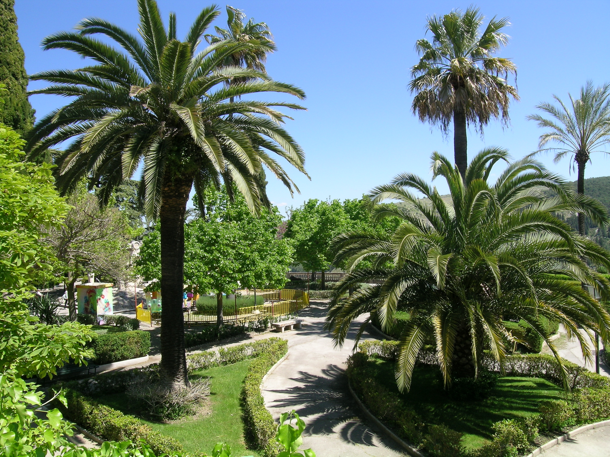
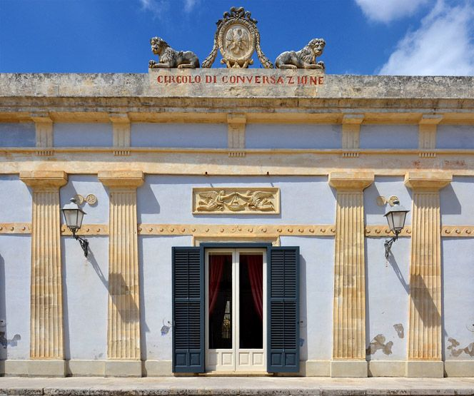
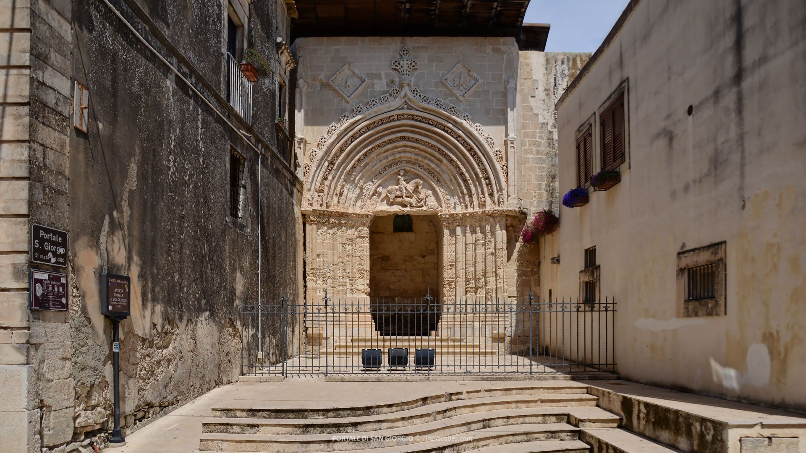

Piazza Pirandello,
Ragusa

Piazza Pirandello
La Piazza della Repubblica è uno dei punti più suggestivi e rappresentativi della città di Ragusa, situata nella parte bassa conosciuta come Ragusa Ibla. Più che una semplice piazza, è una vera porta d’accesso al cuore barocco della città, un luogo dove il tempo sembra rallentare e ogni dettaglio racconta una storia.
La piazza si apre scenograficamente ai piedi della maestosa Duomo di San Giorgio**, uno dei capolavori assoluti del barocco siciliano. La facciata della chiesa, con le sue linee sinuose e la scalinata imponente, domina lo spazio urbano creando un effetto teatrale di grande impatto visivo. Questo equilibrio tra architettura e paesaggio urbano rende la piazza uno dei luoghi più fotografati della città.
La sua configurazione attuale è il risultato della ricostruzione seguita al devastante Terremoto del Val di Noto del 1693, che ridi segnò completamente il volto di Ragusa. Da questa tragedia nacque un nuovo linguaggio architettonico, il barocco siciliano, che proprio qui trova una delle sue espressioni più eleganti e armoniose.
Passeggiare in Piazza della Repubblica significa immergersi in un’atmosfera unica: le luci calde delle pietre, i vicoli che si diramano tutt’intorno e la presenza di piccoli locali e botteghe creano un ambiente intimo e accogliente. È un luogo perfetto per fermarsi, osservare e lasciarsi trasportare dalla bellezza del contesto. La piazza è anche punto di ritrovo per eventi culturali e religiosi, mantenendo viva la tradizione comunitaria.
Una curiosità interessante riguarda proprio il suo ruolo urbanistico: storicamente, questa piazza rappresentava uno snodo fondamentale tra la Ragusa “moderna” e quella antica, diventando un punto di passaggio obbligato per chiunque volesse esplorare Ibla.


Giardino Ibleo
Uno dei giardini pubblici più affascinanti della Sicilia, situato all’estremità di Ragusa Ibla. Offre panorami spettacolari sulle vallate circostanti ed è un luogo ideale per relax e fotografie.

Circolo di Conversazione
Elegante edificio storico simbolo della vita aristocratica ottocentesca. La sua architettura raffinata lo rende uno dei luoghi più iconici e fotografati del centro.

Portale di San Giorgio
Un affascinante resto dell’antica chiesa medievale, sopravvissuto al terremoto del 1693. Ricco di dettagli gotici, è una testimonianza preziosa del passato più antico della città.